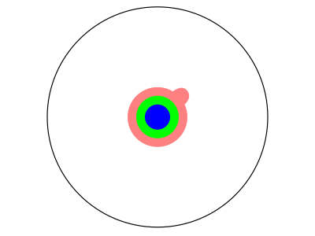

La guía ilustrada a un Ph.D.
Imagínate un círculo que contenga todo el conocimiento humano.

Cuando terminas la enseñanza básica, sabes un poquito.

Cuando terminas la enseñanza media, sabes un poco más.

Con una licenciatura, obtienes una especialidad.

Con un Máster adquieres más conocimiento en esa misma especialidad.

El leer papers de investigación te lleva al límite del conocimiento humano.

Una vez que estás en el límite, te enfocas en algo.

Empujas el limite por algunos años.

Hasta que un día, el límite cede.
Y esa pequeña muesca que has hecho se llama Pd.D.
Por supuesto, el mundo se ve distinto para ti ahora.
Así que no te olvides de la «big picture». Sigue empujando.